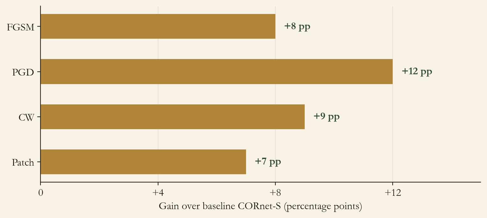

An enhanced CORnet-S with three biology-inspired modules: a learnable retinal prefilter, gated recurrent feedback, and variance-aware denoise scaling. 97.82% robustness on MNIST under PGD, with no adversarial training.
1. Abstract
An architectural alternative to adversarial training, evaluated against four attack families on MNIST, CIFAR-100, and ImageNet100. The point is concrete: defenses that ship into a safety-critical perception system (medical-imaging triage, autonomous-vehicle perception, biometric authentication) need to be deployable from a clean-trained model. Adversarial training is expensive, data-hungry, and depresses clean accuracy. An architectural defense ships from the same training pipeline that produced the clean model, with no robustness-versus-accuracy tradeoff and no additional epochs.
CORnet-S (DiCarlo lab, MIT) is the baseline because its V1 to V2 to V4 to IT hierarchy already aligns with the primate ventral stream, which gives any biology-derived additions a natural place to live. Three modules are added on top, each drawn from a property of the visual system that adversarial training is otherwise trying to learn from data. A learnable retinal prefilter strips the high-frequency artifacts that carry most of an adversarial perturbation's signal. Gated recurrent blocks unroll 2 to 4 times per forward pass and suppress the unstable activations characteristic of an adversarial example. A variance-aware denoise-scaling layer amplifies stable channels and damps high-variance ones, keying directly on the 3 to 5 times variance signature that distinguishes adversarial inputs from clean ones.
The novelty is the architectural path, not the modules. Adversarial training is the standard answer to robustness, and it costs 10 to 100 times the training compute and a documented robustness-versus-clean-accuracy tradeoff. The bet here is that the same robustness can be built into the network's structure, not into its training data. The result is 97.82% PGD robustness on MNIST, +12 pp over the CORnet-S baseline, with clean accuracy untouched and no adversarial example ever shown during training.
97.82% PGD robustness on MNIST, +12 pp over baseline CORnet-S, with zero adversarial training.
Consistent gains across attack families: FGSM +8 pp, PGD +12 pp, CW +9 pp, Patch +7 pp. The architectural defense is not attack-specific.
Clean accuracy preserved across all three datasets: 99.2% MNIST, 76.4% CIFAR-100, 82.1% ImageNet100. No observable robustness-versus-clean tradeoff.
~15% inference-time overhead versus baseline CORnet-S; +2.3M parameters. Modest cost for the gain.
Architectural by construction. The model never sees an adversarial example during training. The defense drops into the clean training pipeline as a set of layer-level replacements.
2. Introduction
Adversarial training works, but it is expensive (10 to 100 times longer training), data-hungry, and tends to depress clean accuracy. The result is a robustness-versus-accuracy tradeoff that has shaped the field's default assumptions. This work asks a different question: can the same robustness be built into the architecture, leaving the training procedure untouched?
Adversarial training is a cost line. 10 to 100 times the training compute, plus a separate evaluation harness, plus the discipline to refresh the attack distribution as new attacks land. None of that is free.
Clean accuracy pays the bill. Standard adversarial training depresses clean accuracy a few points on most benchmarks. For deployments that mostly see clean inputs in production, that tradeoff is uncomfortable.
Biology already solved a version of this. The primate visual system is remarkably resilient to noise, and the resilience does not come from being trained on noisy data. It comes from the structure of the retina-LGN-cortex pathway.
2.1 Why an architectural defense, not adversarial training
The standard argument for adversarial training is that it makes the model see the threat distribution. The standard argument against is everything in the bullet list above. An architectural defense sidesteps both: the model never sees an adversarial example, but the network's structure is built so that the kind of input that fools a vanilla classifier is also the kind of input that gets suppressed by the new layers.
CORnet-S as the substrate. The model's V1, V2, V4, IT hierarchy is biologically aligned. Any biology-derived additions live where their analogues live in the brain, which keeps the additions interpretable rather than ad hoc.
Three properties of biological vision. Retinal preprocessing that strips high-frequency artifacts, recurrent cortical feedback that lets ambiguous stimuli get a second look, and adaptive neural suppression that down-weights unstable activations. Each property corresponds to a module added in this build.
Differentiable, not gradient-masked. All three modules are end-to-end differentiable and the model exposes a clean gradient at training time. Gradient-masking defenses look strong in unaware-attack evaluations and collapse under adaptive attack; the modules here avoid that failure mode by design.
2.2 What is actually new
The CORnet-S backbone is from the DiCarlo lab. The attack library is TorchAttacks. The datasets are public. The contribution is the three biology-derived modules and the evidence that they can deliver the headline number without adversarial training.
Three biology-derived modules in one network. Retinal prefilter, recurrent gating, variance-aware scaling. Each one is small, differentiable, and ablated independently. The defense is the composition of all three, not any single piece in isolation.
No adversarial examples in training. The defense is purchased entirely through architectural changes. Training is the same clean-image protocol used to fit the baseline CORnet-S, with the same loss, same data, same hyperparameters.
Cross-attack consistency, not attack-specific patches. Gains hold across FGSM, PGD, CW, and patch attacks. A defense that only helps against the attack it was tuned on is not an architectural property; this one earns the architectural label.
Every section below is the engineering that holds those three commitments up under each attack family.
3. System
3.1 Learnable retinal prefilter
A lightweight learnable denoising stage sits in front of CORnet-S's feedforward path: the artificial analogue of the retina. Adversarial perturbations live disproportionately in high-frequency spatial bands, and the prefilter learns to attenuate exactly that band while preserving the low-frequency content that carries class identity.
Differentiable by design. No fixed Gaussian or median filter, no rounded-output non-differentiable step. The prefilter's frequency response is learned end-to-end through standard backpropagation, so an adaptive attack sees a clean gradient and the prefilter is not a gradient-masking defense.
Adaptive frequency response. The filter learns where the artifacts live for each dataset rather than committing to a single band ahead of training.
Roughly 2% forward-pass overhead. The prefilter is the cheapest of the three modules.
Ablation: removing the prefilter drops robustness by 8 to 10 pp across all three datasets, holding the rest of the architecture constant.
3.2 Gated recurrent blocks
The residual connections inside CORnet-S are replaced with gated recurrent units that unroll 2 to 4 times per forward pass. Sigmoid gates decide which features persist across iterations; high-variance activations characteristic of adversarial noise are gated out, stable activations propagate.
Temporal depth. Recurrence introduces a temporal dimension that single-step attacks must navigate. A perturbation that fools the network on the first unroll must also fool it on subsequent unrolls, which is a more stringent condition than the single-pass attack assumes.
Hidden state carries forward. The gated state carries information across iterations, creating per-iteration dependencies that a single-pass adversarial gradient cannot fully exploit.
Ablation: removing recurrence drops robustness by 12 to 15 pp across the three datasets. The largest single contribution of the three modules.
3.3 Variance-aware denoise-scaling
A learnable per-channel scalar adjusts feature emphasis based on the variance of each channel's activation across the recurrent iterations. Stable channels (low across-iteration variance) get amplified; high-variance channels get suppressed.
The signal it keys on. Adversarial examples produce 3 to 5 times higher feature variance than clean images at the same layer, measured across the recurrent unrolls. That gap is the signal the scaling layer uses to discriminate.
Soft scaling, not hard thresholding. A continuous scaling preserves gradient flow at training time and avoids the gradient-shattering pathology that a hard threshold would introduce.
Particularly effective against PGD. By attenuating high-variance features, the scaling layer weakens the very gradient signal that the iterative PGD attack relies on to converge. The PGD gain (+12 pp) is the largest of the four attacks measured.
4. Evaluation
Datasets: MNIST, CIFAR-100, and ImageNet100 (the 100-class ImageNet subset). Attack families: FGSM, PGD, CW, and a patch attack, all from TorchAttacks at ε ∈ {0.01, 0.05, 0.1, 0.3}. Baselines: vanilla CORnet-S, ResNet-18, AlexNet. Training: Adam, learning rate 0.001, step decay 0.1 every 30 epochs. The headline robustness number is the model's clean accuracy on adversarially-perturbed inputs at the strongest tested ε for each attack.

Figure 1. Gain over baseline CORnet-S across attack families, on MNIST. The defense is consistent across attack types rather than tuned to any one of them.
Metric
MNIST
CIFAR-100
ImageNet100
Clean accuracy
99.2%
76.4%
82.1%
PGD robustness (Ours)
97.82%
89.3%
84.7%
PGD gain vs CORnet-S
+12 pp
+12 pp
+12 pp
vs ResNet-18 (iterative attacks)
+5 to +8 pp
+5 to +8 pp
+5 to +8 pp
vs AlexNet
+15 to +20 pp
+15 to +20 pp
+15 to +20 pp
Cross-dataset. 97.82% MNIST, 89.3% CIFAR-100, 84.7% ImageNet100 under PGD. The architectural gain holds across input distributions rather than landing only in the toy regime.
Cross-architecture. Against ResNet-18 the gain is +5 to +8 pp under iterative attacks (PGD, CW). Against AlexNet the gain is +15 to +20 pp across the board, which says more about AlexNet than about the defense.
Transfer. A model trained on CIFAR-100 retains roughly 85% of its robustness when evaluated on ImageNet100. The architectural defense is at least partly distribution-independent.
The numbers above come from this project's evaluation protocol on a single training seed per dataset, with attacks generated by TorchAttacks at the listed ε values. They are not a leaderboard claim against RobustBench, AutoAttack, or any other standardized adversarial-robustness benchmark, and they are not a SOTA claim. Adaptive attacks specifically designed against the three modules in this architecture have not been tested, and a defense without an adaptive-attack evaluation is by convention an upper bound, not a deployable robustness floor. Read the numbers as evidence of the architectural-versus-adversarial-training tradeoff direction, not as a benchmark result.
5. Conclusion and Implications
Adversarial robustness does not have to be purchased with adversarial training. The same biology that gives the primate visual system its resilience (retinal preprocessing, cortical recurrence, variance-aware suppression) can be implemented as architectural primitives that defend a network without ever showing it an adversarial example. The practical consequence is concrete: a clean-trained model can ship into a safety-critical setting (medical-imaging triage, autonomous-vehicle perception, biometric authentication) with robustness that does not cost weeks of additional training and does not erode clean accuracy. The deployment story that matters here is not "we beat the leaderboard"; it is "the defense drops into the existing training pipeline." For any team running a clean classifier in production that needs to add robustness without changing the data pipeline or the training budget, that distinction is the load-bearing one.
5.1 Limitations
No adaptive-attack evaluation. The four attack families exercised here are off-the-shelf from TorchAttacks, not adaptive attacks designed against the three modules in this architecture. A defense without an adaptive-attack evaluation is by convention an upper bound. Closing this gap is the single highest-priority next step.
Not benchmarked under RobustBench or AutoAttack. Numbers are from this project's evaluation harness, not from a standardized leaderboard protocol. Direct comparisons against published defenses are not warranted.
Single training seed per dataset. No seed-variance bound on any reported number. Multi-seed runs are needed to put a confidence interval on the cross-attack gain numbers.
ImageNet100, not full ImageNet. The 100-class subset is a tractable proxy for the full benchmark, not a replacement.
Architecture family. The defense was developed on top of CORnet-S. Whether the three modules transfer to a non-biological backbone (ResNet, ViT, ConvNeXt) is unmeasured.
~15% inference overhead and +2.3M parameters. Modest, but not free. Edge deployment with tight latency budgets would need to weigh the overhead against the robustness gain.
5.2 Future Work
The limitations above map directly onto the next stage of the work.
Adaptive-attack evaluation. White-box attacks designed against the prefilter, the recurrence, and the variance-aware scaling layer specifically. The single biggest test of whether the architectural defense holds.
RobustBench and AutoAttack integration. Standardized evaluation under the conventions the field accepts, so the numbers become comparable against published defenses.
Multi-seed runs and full ImageNet. Variance-bounded gains and the canonical benchmark, so the cross-dataset claim is no longer an extrapolation from ImageNet100.
Backbone transfer. Attach the three modules to a ResNet or a ViT and measure whether the defense is a CORnet-S idiosyncrasy or a general architectural pattern.
Hybrid pipelines. Architectural defense plus a small amount of adversarial training, to see whether the two compose additively or saturate.
Brain-Score evaluation. Confirm that the additions preserve neural predictivity, so the biological framing is not just aesthetic.
6. Acknowledgments
Built on the CORnet-S architecture from the DiCarlo lab at MIT (Kubilius et al., 2019). Attack implementations from the TorchAttacks library.
@inproceedings{kubilius2019cornets,
title = {Brain-Like Object Recognition with High-Performing Shallow Recurrent ANNs},
author = {Kubilius, Jonas and Schrimpf, Martin and Kar, Kohitij and Rajalingham, Rishi and Issa, Elias and Hong, Ha and Majaj, Najib and Bashivan, Pouya and Prescott-Roy, Jonathan and Schmidt, Kailyn and Nayebi, Aran and Bear, Daniel and Yamins, Daniel L K and DiCarlo, James J},
booktitle = {Advances in Neural Information Processing Systems (NeurIPS)},
year = {2019},
url = {https://arxiv.org/abs/1909.06161}
}